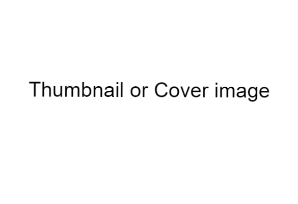

Our school is home of ExcellenceWith the establishment of 18FAD, it was decided to establish an english medium school. In 1973, Army Public School Unchi Bassi was established in 18FAD. The school catered its various services upto primary level till 1978. The school was upgraded to Class 10th in apr 1980 and affiliated to CBSE New Delhi. The school was further upgraded to +2 level in apr 1986. The School at present has a total of around 2000 students on its roll. |
 |